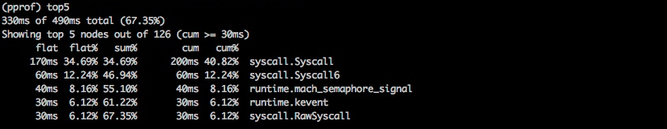
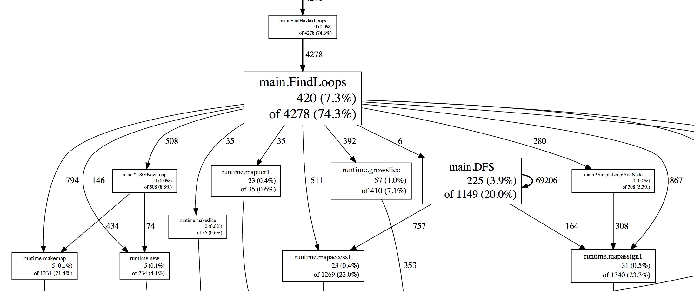
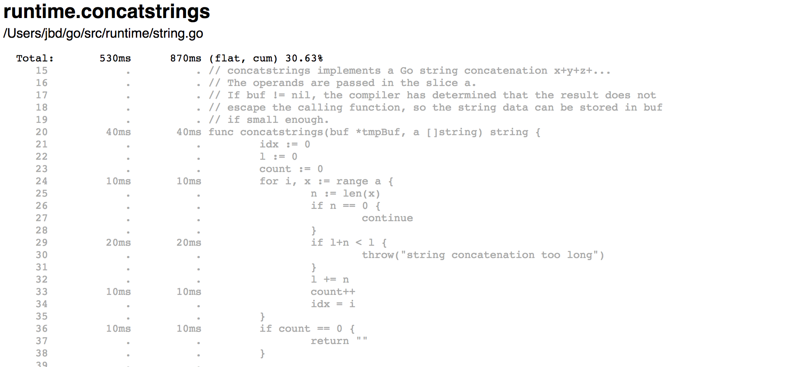
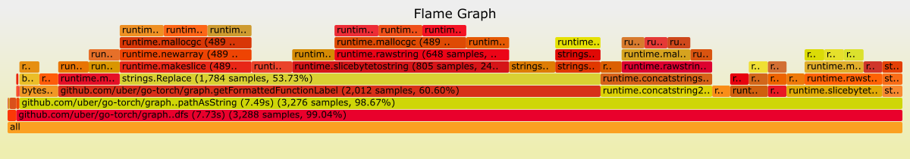
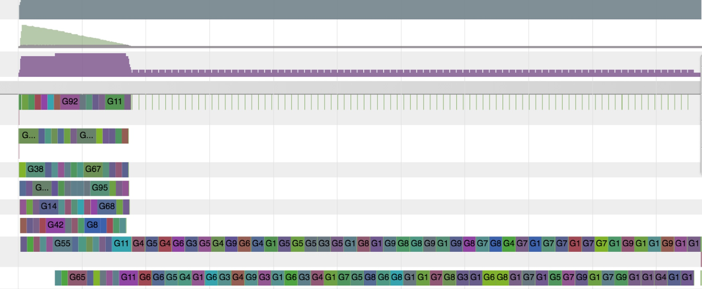

Go 生态提供了丰富的 API 和工具，用于诊断 Go 程序的逻辑问题与性能问题。本页概述可用工具，帮助你根据具体问题选择合适的方案。
诊断方案大致分为以下几类：
注意：某些诊断工具会相互干扰。例如，精确的内存剖析会影响 CPU 剖析结果，goroutine 阻塞剖析会影响调度器追踪。单独使用这些工具可以获得更准确的信息。
性能剖析有助于定位开销较大或频繁调用的代码。Go 运行时提供符合 pprof 可视化工具格式的性能剖析数据。可以通过 go test 在测试期间采集，或通过 net/http/pprof 提供的端点采集。采集后，再用 pprof 筛选并可视化主要的代码路径。
runtime/pprof 包提供以下预定义剖析类型：
runtime.SetBlockProfileRate 开启。
runtime.SetMutexProfileFraction 开启。
还有哪些工具可以分析 Go 程序的性能？
在 Linux 上，可以使用 perf 工具分析 Go 程序。perf 可以剖析 cgo/SWIG 代码和内核，并展开其调用栈，有助于了解原生代码或内核中的性能瓶颈。在 macOS 上，可以使用 Instruments 工具套件。
可以分析生产环境中的服务吗？
可以。生产环境中的程序可以安全地进行性能剖析，但启用某些剖析（例如 CPU 剖析）会带来额外开销，可能降低性能。上线使用前，应先测量剖析工具的开销，评估影响。
你可以定期采集生产服务的性能数据。尤其是一个进程有多个副本时，定期随机选择一个副本进行采集是较稳妥的方式。选定生产进程后，每隔 Y 秒采集 X 秒，保存结果用于可视化和分析，并周期性重复。可以人工或自动审查结果以发现问题。不同类型的数据采集可能相互干扰，因此建议一次只采集一种剖析数据。
如何可视化性能剖析数据？
Go 工具通过 go tool pprof 提供文本、图形和 callgrind 形式的可视化。实际示例参见剖析 Go 程序。


Weblist 视图在 HTML 页面中逐行展示源码的开销。下例中，runtime.concatstrings 耗时 530ms，列表中还显示了每行代码的开销。

另一种可视化方式是火焰图。它允许沿着特定调用链探索，并放大或缩小某段代码的范围。上游 pprof 已支持火焰图。

只能使用内置的剖析类型吗？
除了运行时提供的类型，你还可以通过 pprof.Profile 创建自定义剖析数据，并用现有工具分析。
可以通过不同路径和端口提供剖析处理程序（/debug/pprof/...）吗？
可以。net/http/pprof 默认向默认的路由多路复用器注册处理程序，也可以使用该包导出的处理函数，自行注册。
例如，下面的程序在 :7777 端口的 /custom_debug_path/profile 路径提供 pprof.Profile 处理程序：
package main
import (
"log"
"net/http"
"net/http/pprof"
)
func main() {
mux := http.NewServeMux()
mux.HandleFunc("/custom_debug_path/profile", pprof.Profile)
log.Fatal(http.ListenAndServe(":7777", mux))
}
追踪通过代码插桩，分析调用链整个生命周期中的延迟。Go 提供 golang.org/x/net/trace，作为每个 Go 节点的简易追踪后端，并提供精简的插桩库和简单的仪表盘。Go 还提供执行追踪器，记录一段时间内的运行时事件。
追踪可以帮助我们：
在单体系统中，收集程序各组成部分的诊断数据相对容易：所有模块位于同一进程，共享日志、错误及其他诊断信息的上报资源。当系统扩展到多个进程并逐渐分布式化时，要跟踪请求从前端 Web 服务器出发、经过所有后端、再将响应返回用户的全过程，就变得困难。分布式追踪正是用于对这类生产系统插桩和分析的重要工具。
分布式追踪通过代码插桩，分析用户请求整个生命周期中的延迟。当系统分布式化，常规性能剖析和调试工具难以覆盖整个系统时，可以用分布式追踪分析用户请求与 RPC 的性能。
分布式追踪可以帮助我们：
Go 生态中既有针对特定追踪系统的分布式追踪库，也有不绑定具体后端的库。
可以自动拦截每次函数调用并创建追踪记录吗？
Go 不提供自动拦截所有函数调用并创建 span 的机制。需要手动插桩，创建、结束 span，并为其添加注解。
Go 库中应如何传播追踪请求头？
可以通过 context.Context 传播追踪标识和标签。原文指出，行业当时尚无统一的追踪键或追踪请求头表示，各追踪系统需要在自己的 Go 库中提供传播工具。
追踪还可以包含标准库或运行时中的哪些底层事件？
标准库和运行时正在提供更多 API，用于通知底层内部事件。例如，httptrace.ClientTrace 可以跟踪对外发起的请求生命周期中的底层事件。相关工作还包括从运行时执行追踪器获取底层事件，并让用户定义和记录自己的事件。
调试用于确定程序行为异常的原因。调试器帮助我们了解程序的执行流程和当前状态。调试方式有多种，本节重点介绍将调试器附加到程序，以及核心转储调试。
Go 用户主要使用以下调试器：
调试器对 Go 程序的支持如何？
gc 编译器会执行函数内联、变量寄存器分配等优化，这些优化有时会增加调试难度。Go 团队持续改进优化后二进制文件中的 DWARF 调试信息。在相关改进可用前，原文建议构建待调试代码时关闭优化。以下命令构建包时禁用编译器优化：
$ go build -gcflags=all="-N -l"作为改进的一部分，Go 1.10 曾引入编译器标志
-dwarflocationlists，让编译器添加位置信息列表，以帮助调试器处理经过优化的二进制文件。以下命令展示了保留优化并生成 DWARF 位置列表的历史用法：
$ go build -gcflags="-dwarflocationlists=true"
推荐使用哪种调试界面？
Delve 和 GDB 都提供命令行界面，但大多数编辑器集成和 IDE 也提供专用的图形调试界面。
Go 程序可以进行事后调试吗？
核心转储文件包含运行进程的内存转储和进程状态，主要用于程序的事后调试，也可用于了解仍在运行的程序状态。因此，核心转储是分析生产服务的有效辅助手段。可以获取 Go 程序的核心转储，再使用 Delve 或 GDB 调试，分步说明参见核心转储调试。
运行时提供统计数据和内部事件报告，帮助用户在运行时层面诊断性能和资源利用率问题。
监控这些统计数据，有助于了解 Go 程序的整体健康状况和性能。常见的统计数据与状态包括：
runtime.ReadMemStats：报告堆分配和垃圾回收相关指标，可监控进程消耗的内存、内存使用效率，以及内存泄漏。
debug.ReadGCStats：读取垃圾回收统计数据，用于了解 GC 暂停消耗的资源，还会报告垃圾回收暂停的时间序列和暂停时长的百分位数。
debug.Stack：返回调用它的 goroutine 的调用栈，帮助了解该 goroutine 的执行路径。译注：原文还提到了查看所有 goroutine 的数量和阻塞情况，但此函数只返回当前 goroutine 的调用栈；查看全部 goroutine 应使用前文介绍的 goroutine 剖析。
debug.WriteHeapDump：暂停所有 goroutine，将堆转储到文件。堆转储是 Go 进程在某个时刻的内存快照，包含全部已分配对象，以及 goroutine、终结器等信息。
runtime.NumGoroutine：返回当前 goroutine 数量。可以监控该值，判断 goroutine 的使用情况，或发现 goroutine 泄漏。
Go 自带运行时执行追踪器，可采集调度、系统调用、垃圾回收、堆大小等多种运行时事件，并通过 go tool trace 可视化。它用于发现延迟和资源利用率问题，例如检查 CPU 是否得到充分利用，以及网络或系统调用何时影响 goroutine 的运行与调度。
追踪器适合用于：
不过，它不擅长定位热点，例如解释 CPU 或内存用量过高的原因。这类问题应优先使用性能剖析工具。

上图的 go tool trace 可视化结果显示，程序起初执行正常，随后逐渐串行化。这可能意味着共享资源上的锁竞争形成了瓶颈。
采集和分析运行时追踪的方法，参见 go tool trace。
适当设置 GODEBUG 环境变量，运行时也会输出事件和诊断信息。
GODEBUG 还可以禁用标准库和运行时对指令集扩展的使用。